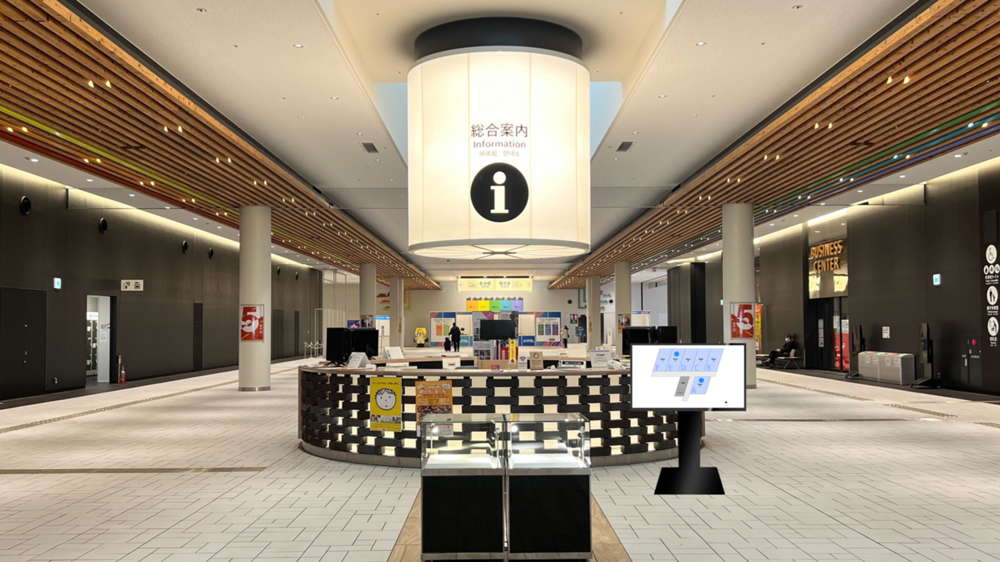
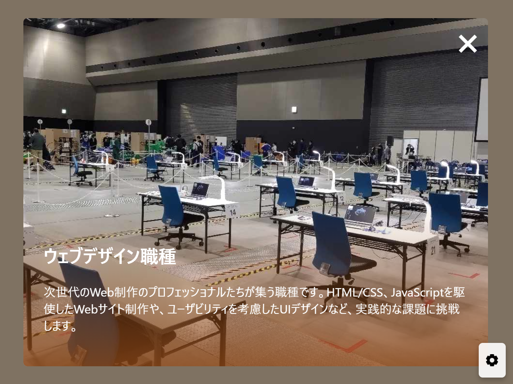

オールインワンプラン 事例紹介会場全体を一目で把握できる大型マップ
総合案内所で来場者をお迎えするのは、使いやすさにこだわったデジタルマップです。
タッチパネル式で、会場内のどのエリアに何があるかを手軽にチェックできます。
さらに、選択したエリアやブースについての詳細情報もその場で表示され、ブースの特徴や出展企業の情報まで確認可能です。
リアルタイムで更新されるため、直前の変更にも柔軟に対応し、展示会を訪れる方々に快適で効率的な体験を提供します。
タッチパネル式で、会場内のどのエリアに何があるかを手軽にチェックできます。
さらに、選択したエリアやブースについての詳細情報もその場で表示され、ブースの特徴や出展企業の情報まで確認可能です。
リアルタイムで更新されるため、直前の変更にも柔軟に対応し、展示会を訪れる方々に快適で効率的な体験を提供します。


＞
＜